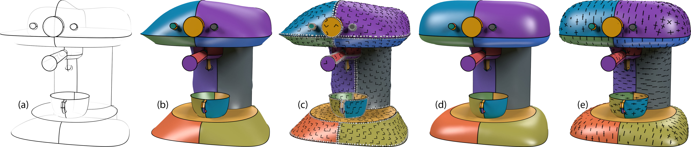

| Flow Aligned Surfacing of Curve Networks |
| Hao Pan1, Yang Liu2, Alla Sheffer3, Nicholas Vining3, Changjian Li1, Wenping Wang1 |
| 1The University of Hong Kong, 2Microsoft Research Asia, 3University of British Columbia |
|  |
| Figure 1: Surfacing an artist created curve network: (a) an input curve network of the coffee maker model; (b) initial surface; (c) the computed flow field aligned with network flow lines denoted by dashed white lines on the initial surface; (d) final surface whose curvature directions (scaled by principal curvatures) (e) are well aligned with the representative flow lines in the curve network. |
| Abstract |
| We propose a new approach for automatic surfacing of 3D curve networks, a long standing computer graphics problem which has garnered new attention with the emergence of sketch based modeling systems capable of producing such networks. Our approach is motivated by recent studies suggesting that artist-designed curve networks consist of descriptive curves that convey intrinsic shape properties, and are dominated by representative flow lines designed to convey the principal curvature lines on the surface. Studies indicate that viewers complete the intended surface shape by envisioning a surface whose curvature lines smoothly blend these flow-line curves. Following these observations we design a surfacing framework that automatically aligns the curvature lines of the constructed surface with the representative flow lines and smoothly interpolates these representative flow, or curvature directions while minimizing undesired curvature variation. Starting with an initial triangle mesh of the network, we dynamically adapt the mesh to maximize the agreement between the principal curvature direction field on the surface and a smooth flow field suggested by the representative flow-line curves. Our main technical contribution is a framework for curvature-based surface modeling, that facilitates the creation of surfaces with prescribed curvature characteristics. We validate our method via visual inspection, via comparison to artist created and ground truth surfaces, as well as comparison to prior art, and confirm that our results are well aligned with the computed flow fields and with viewer perception of the input networks. |
| Paper and data |
| Citation in Bibtex |
| @Article{Pan:2015:FlowSurfacing, Title = {Flow Aligned Surfacing of Curve Networks}, Author = {Pan, Hao and Liu, Yang and Sheffer, Alla and Vining, Nicholas and Li, Changjian and Wang, Wenping}, Journal = {ACM Trans. Graph. (SIGGRAPH)}, Year = {2015}, Number = {4}, Pages = {}, Volume = {34}, Address = {New York, NY, USA}, Publisher = {ACM} } |
| ©Hao Pan. Last update: April 30, 2024. |